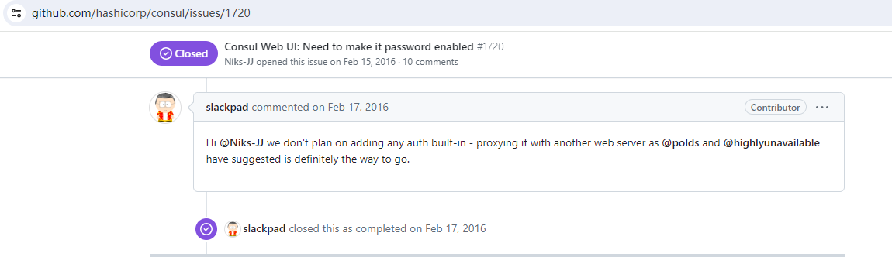

Nacos和Consul是微服务服务注册和服务发现领域比较流行的两个开源技术。
Nacos由阿里开源，定位是：一个更易于构建云原生应用的动态服务发现、配置管理和服务管理平台。Consul由Harshicorp开源，同样也是致力于服务发现和配置。在基本功能上两者保持了较高的相似度，如服务注册发现、配置管理和健康检测等微服务常用功能。一个比较明显的差异在于对CAP的实现，Nacos注重可用性选择了AP，而Consul关注一致性采用了CP，这也是我们在技术选型的时候一个重要的权衡点。
演进路线
在产品初期考虑到Eureka作为Spring Cloud默认的注册中心，使用门槛相对较低，所以选型Eureka作为产品的服务注册中心。
随着产品的发展，业务的复杂性要求引入配置中心，这时候Nacos进入我们的视线。在同样使用AP保证可用性的前提下，增加了配置中心满足了配置管理的需求，并且提供了管理页面提升了产品的可维护性。综合考虑之下，我们决定将产品的服务管理和配置管理迁移到Nacos。
升级到Consul则是外企项目的需求，更加倾向于使用国外更加流行的方案。
问题分析
如果仅仅是将Nacos替换为Consul是很简单的，但是考虑到已有项目的维护，或者哪天来个国内项目要求使用Nacos。所以面对客户Consul的需求时我们较好的应对是：
增加系统对于Consul的适配能力，使得对于不同中间件的需求可以灵活切换。
实现过程
Consul安装
按照产品的技术架构，照例采用Docker的方式运行Consul。
1
2
3
4
| docker pull consul:1.15.4
docker run -d -p 8500:8500 -p 8600:8600/udp --name=consul consul:1.15.4 agent -server -ui -node=server-1 -bootstrap-expect=1 -client=0.0.0.0
|
POM适配
在POM文件中可以同时配置Nacos和Consul，但是为了避免冲突我们需要按需引入依赖。对于Nacos来说不能引入Nacos Client的依赖，因为NacosClient只要引入就会初始化无法通过配置开关控制。对于Consul来说我们引入基本的discover和config即可，引入All会有一些奇奇怪怪的错误。最终得到的POM配置文件如下：
1
2
3
4
5
6
7
8
9
10
11
12
13
14
15
16
17
18
19
20
21
22
23
24
25
26
27
28
29
30
31
32
33
34
35
|
<dependency>
<groupId>org.springframework.cloud</groupId>
<artifactId>spring-cloud-starter-consul-config</artifactId>
<version>3.1.1</version>
</dependency>
<dependency>
<groupId>org.springframework.cloud</groupId>
<artifactId>spring-cloud-starter-consul-discovery</artifactId>
<version>3.1.1</version>
</dependency>
<dependency>
<groupId>joda-time</groupId>
<artifactId>joda-time</artifactId>
<version>2.10.14</version>
</dependency>
<dependency>
<groupId>org.springframework.boot</groupId>
<artifactId>spring-boot-starter-actuator</artifactId>
</dependency>
<dependency>
<groupId>com.alibaba.cloud</groupId>
<artifactId>spring-cloud-starter-alibaba-nacos-config</artifactId>
</dependency>
<dependency>
<groupId>com.alibaba.cloud</groupId>
<artifactId>spring-cloud-starter-alibaba-nacos-discovery</artifactId>
</dependency>
|
bootstrap.propertis 适配
启动配置文件由三块组成：
- 开关
- Consul配置
- Nacos配置
通过开关控制系统使用Consul还是Nacos，注意在开关部分如果不使用该配置中心，需要显式关闭。
1
2
3
4
5
6
7
8
9
10
11
12
13
14
15
16
17
18
19
20
21
22
23
24
25
26
27
28
29
30
31
32
|
spring.application.name=xxx-service
spring.cloud.consul.enabled=true
spring.cloud.nacos.config.enabled=false
spring.cloud.nacos.discovery.enabled=false
spring.cloud.consul.host=localhost
spring.cloud.consul.port=8500
spring.cloud.consul.config.prefix=configuration
spring.cloud.consul.config.profileSeparator=.
spring.cloud.consul.config.format=PROPERTIES
spring.cloud.consul.config.data-key=data
spring.cloud.consul.retry.enabled=false
spring.cloud.nacos.config.server-addr=192.168.8.101:8848
spring.cloud.nacos.config.namespace=local
spring.cloud.nacos.config.group=service-my
spring.cloud.nacos.config.shared-configs[0].data-id=rabbit.properties
spring.cloud.nacos.config.shared-configs[0].group=service-my
spring.cloud.nacos.discovery.server-addr=192.168.8.101:8848
spring.cloud.nacos.discovery.namespace=local
spring.cloud.nacos.discovery.group=service-my
spring.cloud.loadbalancer.retry.enabled=false
|
代码适配
对于存在差异的部分我们提供两套实现，例如我们有一个多语言服务需要到配置中心获取资源文件进行后台翻译，对于LocaleService，我们提供了LocaleServiceNacosImpl和LocaleServiceConsulImpl分别对应两个配置中心，在类初始化上通过@ConditionalOnProperty注解进行判断，如下代码所示。
1
2
3
4
5
| @ConditionalOnProperty(value="spring.cloud.nacos.config.enabled",havingValue="true")
public class LocaleServiceNacosImpl implements LocaleService{}
@ConditionalOnProperty(value="spring.cloud.consul.enabled",havingValue="true")
public class LocaleServiceConsulImpl implements LocaleService{}
|
配置结构
Consul通过定义prefix， app-name以及profile，生成四个配置路径，最终的配置文件名称通过data-key指定。
以prefix = configuration, app-name=master, profile=dev为例，我们得到的配置路径为：
- configuration/application
- configuration/application.dev
- configuration/master
- configuration/master.dev
而对应的配置则在 configuration/application/data。
基于以上配置结构，我们可以将rabbitmq.properties等公用文件放在 configuration/application和configuration/application.dev下，而服务相关的配置放在configuration/master和configuration/master.dev下。对于一些特殊的配置文件如多语言文件可以直接放在configuration根目录下，通过ConsulClient进行读取。
总结回顾
通过以上过程我们实现了在一个Spring Boot项目中同时支持Nacos和Consul两个服务注册中心，并可以通过启动配置进行灵活切换。在实施的过程中基本做到了平滑适配，可以看到这两个中间件在兼容性上还是做的不错的，这也是我辈在实现相似软件的时候需要学习的。
最后在项目部署的时候遇到了客户方安全团队的挑战，理由是Consul没有设置认证。通过研究在github issue中找到了如下答复：

最终我们通过Nginx配置Auth Basic在Consul控制台服务之上实现了简单的认证。
1
2
3
4
5
6
7
8
9
| location /{
auth_basic "Consul Area";
auth_basic_user_file password.db;
proxy_set_header Host $http_host;
proxy_set_header X-Real-IP $remote_addr;
proxy_set_header REMOTE-HOST $remote_addr;
proxy_set_header X-Forwarded-For $proxy_add_x_forwarded_for;
proxy_pass http://localhost:8500/;
}
|
实现效果：